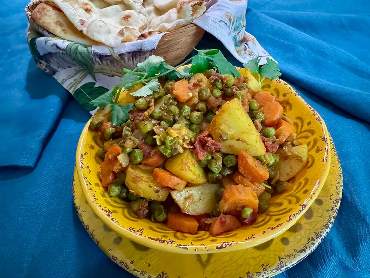

Mixed Vegetable Curry

Description
This mixed vegetable curry will add color, flavor, and a little heat to your plate, a suitable side dish for your
homemade butter chicken, or tikka masala. Add a side of rice and some naan to round out the menu.
Ingredients
- 3 tablespoons ghee or clarified butter
- 1 cup finely chopped onion
- 1 tablespoon minced fresh garlic
- 1 (1/2 inch piece) fresh ginger, grated
- 1/2 cup chopped tomato
- 1 serrano pepper, seeded, membranes removed, minced
- 1 cup sliced, peeled carrots
- 1 cup frozen green peas
- 1 large russet potato (about 1/2 pound), peeled and cut into 1-inch pieces
- 1/2 teaspoon ground turmeric
- 1/2 teaspoon ground coriander
- 1/2 teaspoon ground cumin
- 1/4 teaspoon ground fenugreek seeds
- 1/4 teaspoon chili powder, or to taste
- 3/4 teaspoon salt, or to taste
- 1 tablespoon chopped cilantro, for garnish (optional)
Steps
- Heat ghee in a large, nonstick pan over medium heat. Add onion and cook, stirring, until lightly brown,
about 8 minutes. Add garlic and ginger and cook, stirring, until fragrant, about 1 minute.
- Add tomato, serrano pepper, carrots, peas, potato, turmeric, coriander, cumin, fenugreek, chili powder, and
salt, and cook, stirring, for about 5 minutes.
- Reduce heat to low, cover, and let vegetables steam in their own juices until potatoes are fork tender,
about 25 minutes. Stir about halfway through cooking time, and make sure the pan isn't too dry. If
vegetables are sticking, add 1 or 2 tablespoons water, replace the lid, and continue cooking. Taste; season
with salt.
- Garnish with chopped cilantro. Serve warm, with naan, or similar flatbread.